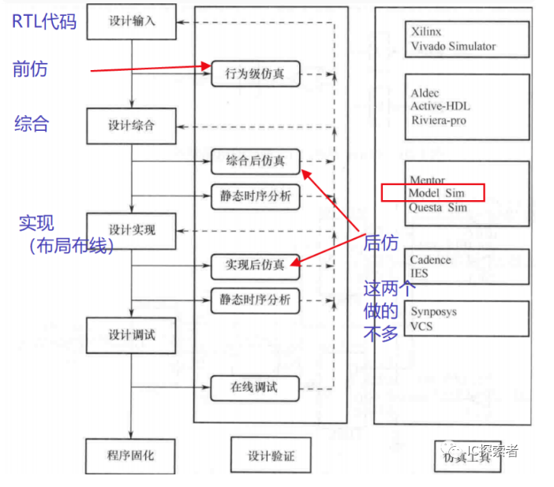
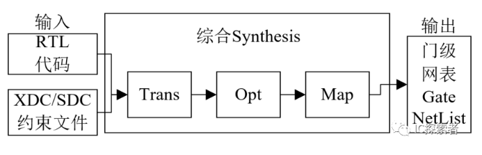
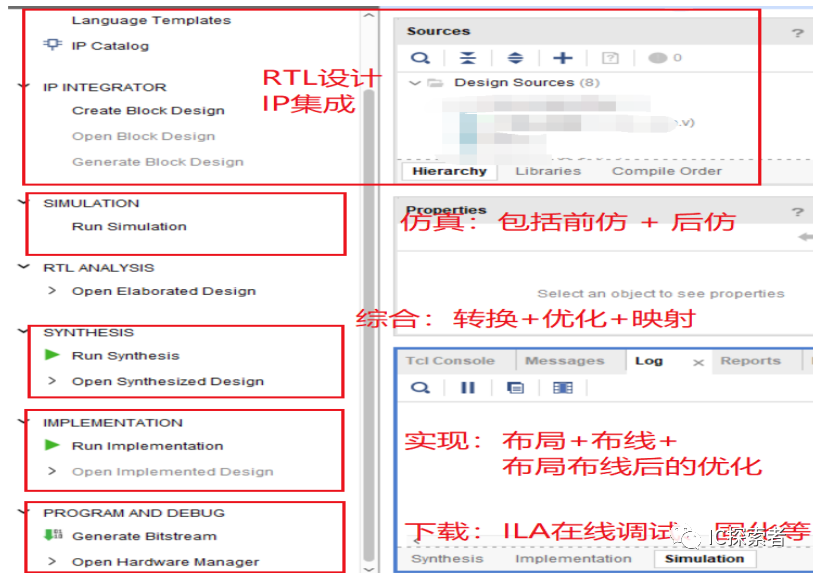
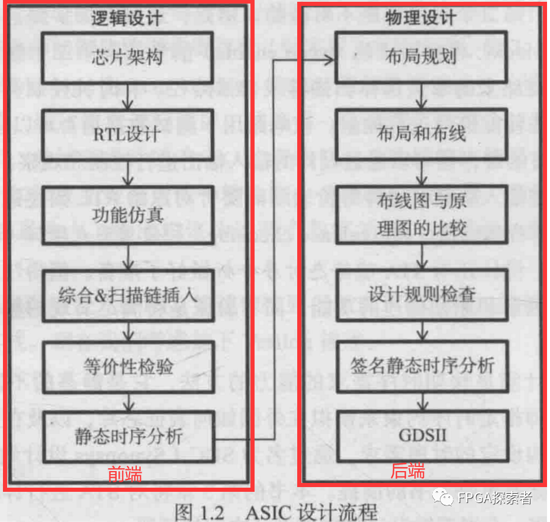
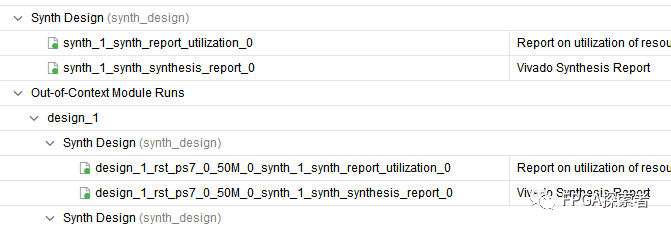

【必备基础——数字IC流程、专业术语】数字IC前端设计流程及工具【RTL设计+功能仿真】【综合】【DFT】【形式验证】【STA静态时序分析】¶
- Version
- linhuangnan
- 2024-03-07
- 数字IC流程
- review
Info
- 数字IC设计流程；
- FPGA设计流程
数字IC设计流程¶

需求分析：这是整个设计过程的起点，在这一步中，工程师确定产品需要满足的性能指标、功耗、面积、速度等参数。
芯片架构：在需求清楚后，设计团队会定义硬件架构，包括处理器核心、存储器、I/O接口等高层次的组成部分，以及它们之间的互联方式。
RTL设计：利用硬件描述语言（HDL），如Verilog或VHDL，来编写可执行的芯片逻辑设计，称为寄存器传输级（RTL）设计。
功能仿真：通过模拟器运行RTL代码，验证逻辑设计在不同测试条件下是否正确实现了预定功能。
综合 & 扫描链插入（DFT）：将RTL设计转换成门级网表，同时进行设计可测试性（Design for Testability, DFT）的改造，如添加扫描链以便于后续的测试。
形式验证：对比RTL设计和综合后的门级网表，确保转换过程中逻辑功能没有变化。
静态时序分析(STA)：分析在最坏情况下信号传输延迟是否满足设计要求，确保数据稳定地在时钟周期内到达目的地。
布局(Place)：将各种逻辑单元放置到芯片的物理位置上，并优化布局以提高性能并减少功耗和面积。
时钟树综合（CTS）：设计时钟网络以供应整个芯片所需的时钟信号，同时平衡不同部分的时钟延迟，确保系统同步。
布线(Route)：在完成布局后连接各个逻辑单元，创建金属连线，以完成电气连接。
布线图与原理图比较（LVS）：Layout Versus Schematic（LVS）检查用于验证布线图（即实际的物理设计）是否与原理图（即设计意图）一致。
设计规则检查（DRC）：检查物理设计是否符合制造工艺的要求，如线宽、空间距离等方面的规范，确认芯片可以被成功制造。
生成GDSII：最后生成版图设计文件，通常是GDSII格式，这是一个标准电子设计交换格式，用于芯片制造。
Tip
对于数字IC设计：
图中省略了后仿真等，静态时序分析STA在后端也会做，布局布线后可做STA分析布线后的时序，此处省略了该步骤，STA可在上述很多步骤中进行。
从综合开始这部分划分比较细的也称中端，有些是专门做综合的。
FPGA开发流程¶

设计输入：RTL代码设计、IP调用集成等；
行为级仿真：前仿真，Behavioral Simulation，只仿真功能，所以也叫功能仿真，需要TestBench仿真激励文件；不包含任何的走线延时，不引入寄存器输入输出等延时，仿真速度快；
设计综合：Synthesis，包括Translation转换 + Optimization优化 + Gate Mapping映射；
-
Translation转换：RTL代码转换成门级电路；
-
Optimization优化：面积优化和时序优化，去除不必要的逻辑、合并逻辑、降低扇出等；
-
Mapping映射：将电路映射为门级网表；
如下图所示
综合的输入是：RTL代码 + 约束文件（物理约束+时序约束）
综合后输出的是：门级网表Gate NetList

设计实现：主要是布局（Place）和布线（Route）；
时序仿真：后仿真，针对是综合后（加入约束，延时等信息）的网表文件，在前仿的基础上加入了延时信息的功能仿真，同时验证了设计的时序以及功能都正确。
Modelsim仿真中既可以功能仿真（静态），也可以时序仿真（动态），时序仿真时利用网表文件”.vo”和延时文件”.sdo”；
后仿的速度慢，有时候直接下板测试了。
静态时序分析：Static Timing Analysis，STA；通过加入一些时序约束指令，由工具分析时序是否满足约束；
设计调试：通过ILA等集成逻辑分析仪在线调试；
固化程序：FPGA一般是基于SRAM的，掉电后程序需要重新下载，可以使用Flash等器件，将程序固化在Flash中，每次上电后FPGA从Flash中加载要执行的程序；
比如，Xilinx的Vivado集成设计工具：

与FPGA设计流程对比¶
对于数字IC设计：
图中省略了后仿真等，静态时序分析STA在后端也会做，布局布线后可做STA分析布线后的时序，此处省略了该步骤，STA可在上述很多步骤中进行。
从综合开始这部分划分比较细的也称中端，有些是专门做综合的。
与FPGA设计流程不同的地方：
（1）DFT扫描链插入，Design for Test，插入一些选择器用于使能控制等，方便测试；
（2）时钟树综合（CTS），FPGA中的时钟树相对固定；
（3）最后生成的是GDSII文件，可用于流片Tapout。
整个过程是RTL代码到GDSII的过程，也成为RTL2GDSII。
形式验证（等价性检验），验证综合后的门级网表的功能是否与综合前的RTL代码功能一致，保证功能上可行；
综合后的STA静态时序分析：验证综合后的时序是否满足要求；
布局布线后的STA：验证布局布线引入了布线延迟后，时序是否满足要求；
形式验证与动态仿真的不同：
形式验证通过工具验证两个设计的功能和结构是等价的，运行时间非常短，覆盖率100%；
动态仿真只能验证部分路径，运行时间长，无法覆盖所有路径；
常用工具¶
DC：Design Compiler，综合工具，RTL代码转变为门级网表；
ModelSim/QuestSim：仿真工具，Mentor公司的，支持功能仿真、时序仿真，一般常用的是功能仿真，高级版的可以做代码覆盖率收集（验证范畴）；
VCS：与ModelSim类似，Synopsys公司的；
PT：Prime Time，静态时序分析工具，Synopsys公司的；
练习¶
（联发科技-2021年校招-数字IC-卷A）
请说明 IC 前端整合（RTL To Netlist）所包含的流程，并简要说明一下 Synthesis 的主要任务，以及 Synthesis 的输入和输出。
以门级网表（Netlist）生成为分界线，之前称为前端，之后称为后端。
布局布线之前可以认为是前端，布局布线到流片是后端。
前端：逻辑设计，RTL ——》 Netlist 门级网表；
后端：物理设计，Netlist 门级网表 ——》 物理版图；

答案
Synthesis：综合，主要任务是将 RTL 代码 转成 门级网表；
典型的网表文件由单元（Cell）、引脚（Pin）、端口（Port）、网络（Net）组成。
Synthesis 输入：RTL 代码，工艺库，约束
Synthesis 输出：Netlist 门级网表（用于布局布线），标准延迟文件（用于时序仿真）；综合后的报告；

功能仿真¶
验证 RTL 代码设计的功能正确性，没有加入延时信息，又叫前仿真，工具有 Mentor 的 Modelsim，Synopsys 的VCS，Candence 的 NC-Verilog。在综合、布局布线以后，有加入延时的后仿真（时序仿真）。
Synthesis 综合¶
逻辑综合的结果（目的）是把 HDL 代码翻译成门级网表 netlist，工具有 Synopsys 的 Design Compiler（简称 DC），门级网表拿去布局布线。
DFT 可测性设计¶
DFT（Design for Test）可测性设计，为了测试而加入的设计，常见技术 ：
（1）Scan Chain（扫描链），针对时序电路，测试寄存器（Flip-Flop）和组合逻辑；
（2）MBIST（Memory Bulit-in Self Test，内建自测试），测试芯片中存储资源， rom 和 ram，在设计中插入内建自测试逻辑；
（3）Boundary Scan（边界扫描），测试封装与 IO、芯片间互联，主要逻辑有 TAP Controller 和 Boundary Scanchain）、JTAG（JTAG 是boundary scan design中用到的一个基本结构）。
ATPG（Automatic Test Pattern Generation，自动测试向量生成，基于扫描链，根据算法推算出应该加载到扫描链上的激励序列和期望序列，这样的序列称为测试向量）；
DFT 构建硬件结构，ATPG 生成测试向量。
形式验证¶
形式验证，属于验证范畴，从 功能上 对综合后的网表进行验证，常用的是等价性检验，以功能验证后的 HDL 设计为参考，对比综合后的网表功能，检验是否在功能上存在等价性，保证综合后没有改变原先 HDL 描述的功能。
形式验证工具有 Synopsys 的 Formality。
STA 静态时序分析¶
STA 静态时序分析（Static Timing Analyse），属于验证范畴，从时序上对综合后的网表进行验证，检查电路是否存在建立时间、保持时间等违例。
注意 STA 和 形式验证的不同，STA 从时序上验证，形式验证从功能上验证。
STA 工具有 Synosys 的 Prime Time。